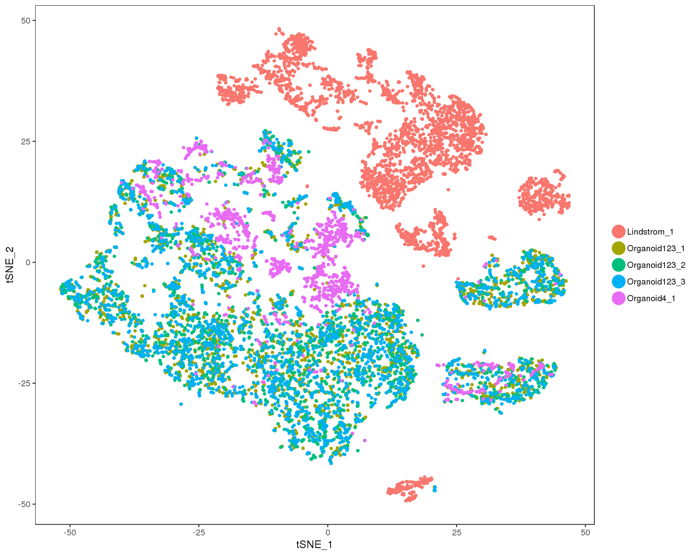
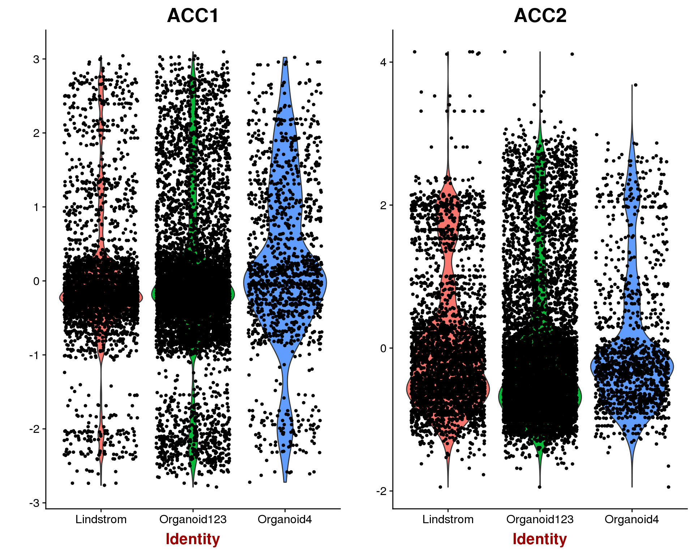

Combined Integration
Last updated: 2018-08-09
workflowr checks: (Click a bullet for more information)-
✔ R Markdown file: up-to-date
Great! Since the R Markdown file has been committed to the Git repository, you know the exact version of the code that produced these results.
-
✔ Environment: empty
Great job! The global environment was empty. Objects defined in the global environment can affect the analysis in your R Markdown file in unknown ways. For reproduciblity it’s best to always run the code in an empty environment.
-
✔ Seed:
set.seed(20180730)The command
set.seed(20180730)was run prior to running the code in the R Markdown file. Setting a seed ensures that any results that rely on randomness, e.g. subsampling or permutations, are reproducible. -
✔ Session information: recorded
Great job! Recording the operating system, R version, and package versions is critical for reproducibility.
-
Great! You are using Git for version control. Tracking code development and connecting the code version to the results is critical for reproducibility. The version displayed above was the version of the Git repository at the time these results were generated.✔ Repository version: 99eb526
Note that you need to be careful to ensure that all relevant files for the analysis have been committed to Git prior to generating the results (you can usewflow_publishorwflow_git_commit). workflowr only checks the R Markdown file, but you know if there are other scripts or data files that it depends on. Below is the status of the Git repository when the results were generated:
Note that any generated files, e.g. HTML, png, CSS, etc., are not included in this status report because it is ok for generated content to have uncommitted changes.Ignored files: Ignored: .Rhistory Ignored: .Rproj.user/ Ignored: analysis/cache/ Ignored: data/Lindstrom/ Ignored: packrat/lib-R/ Ignored: packrat/lib-ext/ Ignored: packrat/lib/ Ignored: packrat/src/ Untracked files: Untracked: R/seurat_helpers.R Untracked: analysis/99_Methods.Rmd Untracked: analysis/methods.docx Untracked: public/figure/06_Combined_Integration.Rmd/
Expand here to see past versions:
| File | Version | Author | Date | Message |
|---|---|---|---|---|
| Rmd | 99eb526 | Luke Zappia | 2018-08-09 | Add combined integration |
# scRNA-seq
library("SingleCellExperiment")
library("Seurat")
# Paths
library("here")
# Tidyverse
library("tidyverse")source(here("R/seurat_helpers.R"))org123_path <- here("data/processed/Organoid123_SCE_filtered.Rds")
org4_path <- here("data/processed/Organoid4_SCE_filtered.Rds")
lind_path <- here("data/processed/Lindstrom_SCE_filtered.Rds")Introduction
Here we will combine the two batches of organoid samples with the Lindstrom data using Seurat’s integration method.
if (file.exists(org123_path)) {
org123_sce <- read_rds(org123_path)
} else {
stop("Organoid123 dataset is missing. ",
"Please run '01_Organoid123_QC.Rmd' first.",
call. = FALSE)
}if (file.exists(org4_path)) {
org4_sce <- read_rds(org4_path)
} else {
stop("Organoid4 dataset is missing. ",
"Please run '02_Organoid4_QC.Rmd' first.",
call. = FALSE)
}if (file.exists(lind_path)) {
lind_sce <- read_rds(lind_path)
} else {
stop("Lindstrom dataset is missing. ",
"Please run '05_Lindstrom_QC.Rmd' first.",
call. = FALSE)
}The datasets are currently in SingleCellExperiment format but to use Seurat we need to convert them to Seurat format.
org123 <- as.seurat(org123_sce)
org4 <- as.seurat(org4_sce)
lind <- as.seurat(lind_sce)Variable genes
Before we can align the datasets we need to select a set of genes to use. We do this by looking for highly variable genes.
org123 <- NormalizeData(org123, display.progress = FALSE)
org4 <- NormalizeData(org4, display.progress = FALSE)
lind <- NormalizeData(lind, display.progress = FALSE)
org123 <- ScaleData(org123, display.progress = FALSE)
org4 <- ScaleData(org4, display.progress = FALSE)
lind <- ScaleData(lind, display.progress = FALSE)
org123 <- FindVariableGenes(org123, do.plot = FALSE)
org4 <- FindVariableGenes(org4, do.plot = FALSE)
lind <- FindVariableGenes(lind, do.plot = FALSE)
genes.use <- unique(c(org123@var.genes, org4@var.genes, lind@var.genes))
genes.use <- intersect(genes.use, rownames(org123@scale.data))
genes.use <- intersect(genes.use, rownames(org4@scale.data))
genes.use <- intersect(genes.use, rownames(lind@scale.data))Seurat finds 827 highly variable genes for the first organoid dataset and 840 highly variable genes for the second organoid dataset. There are 578 highly variable genes for the Lindstrom dataset. We take these genes and use those that are present in both datasets. This leaves us with 1368 selected genes.
Merging
Before we try to properly align the datasets let’s see what happens if we just naively merge them together. If this works we might not need to do anything more sophisticated.
merged <- MergeSeurat(org123, org4,
add.cell.id1 = "Org123", add.cell.id2 = "Org4")
merged <- MergeSeurat(merged, lind, add.cell.id2 = "Lind")
merged <- ScaleData(merged, display.progress = FALSE)
merged <- RunPCA(merged, pc.genes = genes.use, pcs.compute = 20,
do.print = FALSE)
merged <- ProjectPCA(merged, do.print = FALSE)
merged <- RunTSNE(merged, dims.use = 1:20, do.fast = TRUE)
merged@meta.data$DatasetSample <- paste(merged@meta.data$Dataset,
merged@meta.data$Sample, sep = "_")
TSNEPlot(merged, group.by = "DatasetSample")
Ideally we would see an even mix of the two datasets here but there is some pretty clear separation. Let’s move on to the alignment process.
Perform CCA
The first step of Seurat’s alignment is to perfrom Canoical Correlation Analysis (CCA). This combines the datasets in the same multi-dimensional space.
combined <- RunMultiCCA(list(prefixCellNames(org123, "Org123"),
prefixCellNames(org4, "Org4"),
prefixCellNames(lind, "Lind")),
genes.use = genes.use, num.cc = 50)
p1 <- DimPlot(combined, reduction.use = "cca", group.by = "Dataset",
pt.size = 0.5, do.return = TRUE)
p2 <- VlnPlot(combined, features.plot = "CC1", group.by = "Dataset",
do.return = TRUE)
plot_grid(p1, p2)
Choose CCs
Now we need to choose the dimensions to use for aligning the datasets. This is similar to choosing principal components for clustering a single dataset. Here for look for a drop off in correlation strength for each CC.
plot <- MetageneBicorPlot(combined, grouping.var = "Dataset", dims.eval = 1:50,
display.progress = FALSE)
We can also look at the genes associated with each of the first nine CCs.
DimHeatmap(object = combined, reduction.type = "cca", cells.use = 500,
dim.use = 1:9, do.balanced = TRUE)
n.dims <- 20Based on these plots we will to use the first 20 CCs.
Align CCA subspaces
Now we can align the CCA subspaces for the two datasets. This makes the dimensions more comparable in a way we can use for clustering.
combined <- AlignSubspace(combined, reduction.type = "cca",
grouping.var = "Dataset", dims.align = 1:n.dims,
verbose = FALSE)
p1 <- VlnPlot(object = combined, features.plot = "ACC1", group.by = "Dataset",
do.return = TRUE)
p2 <- VlnPlot(object = combined, features.plot = "ACC2", group.by = "Dataset",
do.return = TRUE)
plot_grid(p1, p2)
combined <- RunTSNE(combined, reduction.use = "cca.aligned", dims.use = 1:20)
combined@meta.data$DatasetSample<- paste(combined@meta.data$Dataset,
combined@meta.data$Sample,
sep = "_")
TSNEPlot(combined, pt.size = 0.5, group.by = "DatasetSample")
This looks to have worked well, there is no obvious separation between the two datasets.
This combined dataset of 18812 genes and 11115 cells is the starting point for our clustering analysis.
write_rds(combined, here("data/processed/Combined_Seurat.Rds"))Metadata
Session information
devtools::session_info() setting value
version R version 3.5.0 (2018-04-23)
system x86_64, linux-gnu
ui X11
language (EN)
collate en_US.UTF-8
tz Australia/Melbourne
date 2018-08-08
package * version date
abind 1.4-5 2016-07-21
acepack 1.4.1 2016-10-29
ape 5.1 2018-04-04
assertthat 0.2.0 2017-04-11
backports 1.1.2 2017-12-13
base * 3.5.0 2018-06-18
base64enc 0.1-3 2015-07-28
bibtex 0.4.2 2017-06-30
bindr 0.1.1 2018-03-13
bindrcpp * 0.2.2 2018-03-29
Biobase * 2.40.0 2018-07-30
BiocGenerics * 0.26.0 2018-07-30
BiocParallel * 1.14.2 2018-07-08
bitops 1.0-6 2013-08-17
broom 0.5.0 2018-07-17
caret 6.0-80 2018-05-26
caTools 1.17.1.1 2018-07-20
cellranger 1.1.0 2016-07-27
checkmate 1.8.5 2017-10-24
class 7.3-14 2015-08-30
cli 1.0.0 2017-11-05
cluster 2.0.7-1 2018-04-13
codetools 0.2-15 2016-10-05
colorspace 1.3-2 2016-12-14
compiler 3.5.0 2018-06-18
cowplot * 0.9.3 2018-07-15
crayon 1.3.4 2017-09-16
CVST 0.2-2 2018-05-26
data.table 1.11.4 2018-05-27
datasets * 3.5.0 2018-06-18
ddalpha 1.3.4 2018-06-23
DelayedArray * 0.6.2 2018-07-23
DEoptimR 1.0-8 2016-11-19
devtools 1.13.6 2018-06-27
diffusionMap 1.1-0.1 2018-07-21
digest 0.6.15 2018-01-28
dimRed 0.1.0 2017-05-04
diptest 0.75-7 2016-12-05
doSNOW 1.0.16 2017-12-13
dplyr * 0.7.6 2018-06-29
DRR 0.0.3 2018-01-06
dtw 1.20-1 2018-05-18
evaluate 0.10.1 2017-06-24
fitdistrplus 1.0-9 2017-03-24
flexmix 2.3-14 2017-04-28
FNN 1.1 2013-07-31
forcats * 0.3.0 2018-02-19
foreach 1.4.4 2017-12-12
foreign 0.8-70 2017-11-28
Formula 1.2-3 2018-05-03
fpc 2.1-11.1 2018-07-20
gbRd 0.4-11 2012-10-01
gdata 2.18.0 2017-06-06
GenomeInfoDb * 1.16.0 2018-07-30
GenomeInfoDbData 1.1.0 2018-07-30
GenomicRanges * 1.32.6 2018-07-20
geometry 0.3-6 2015-09-09
ggplot2 * 3.0.0 2018-07-03
ggridges 0.5.0 2018-04-05
git2r 0.21.0 2018-01-04
glue 1.3.0 2018-07-17
gower 0.1.2 2017-02-23
gplots 3.0.1 2016-03-30
graphics * 3.5.0 2018-06-18
grDevices * 3.5.0 2018-06-18
grid 3.5.0 2018-06-18
gridExtra 2.3 2017-09-09
gtable 0.2.0 2016-02-26
gtools 3.8.1 2018-06-26
haven 1.1.2 2018-06-27
here * 0.1 2017-05-28
Hmisc 4.1-1 2018-01-03
hms 0.4.2 2018-03-10
htmlTable 1.12 2018-05-26
htmltools 0.3.6 2017-04-28
htmlwidgets 1.2 2018-04-19
httr 1.3.1 2017-08-20
ica 1.0-2 2018-05-24
igraph 1.2.2 2018-07-27
ipred 0.9-6 2017-03-01
IRanges * 2.14.10 2018-07-30
irlba 2.3.2 2018-01-11
iterators 1.0.10 2018-07-13
jsonlite 1.5 2017-06-01
kernlab 0.9-26 2018-04-30
KernSmooth 2.23-15 2015-06-29
knitr 1.20 2018-02-20
labeling 0.3 2014-08-23
lars 1.2 2013-04-24
lattice 0.20-35 2017-03-25
latticeExtra 0.6-28 2016-02-09
lava 1.6.2 2018-07-02
lazyeval 0.2.1 2017-10-29
lmtest 0.9-36 2018-04-04
lubridate 1.7.4 2018-04-11
magic 1.5-8 2018-01-26
magrittr 1.5 2014-11-22
MASS 7.3-50 2018-04-30
Matrix * 1.2-14 2018-04-09
matrixStats * 0.54.0 2018-07-23
mclust 5.4.1 2018-06-27
memoise 1.1.0 2017-04-21
metap 1.0 2018-07-25
methods * 3.5.0 2018-06-18
mixtools 1.1.0 2017-03-10
ModelMetrics 1.1.0 2016-08-26
modelr 0.1.2 2018-05-11
modeltools 0.2-22 2018-07-16
munsell 0.5.0 2018-06-12
mvtnorm 1.0-8 2018-05-31
nlme 3.1-137 2018-04-07
nnet 7.3-12 2016-02-02
parallel * 3.5.0 2018-06-18
pbapply 1.3-4 2018-01-10
pillar 1.3.0 2018-07-14
pkgconfig 2.0.1 2017-03-21
pls 2.6-0 2016-12-18
plyr 1.8.4 2016-06-08
png 0.1-7 2013-12-03
prabclus 2.2-6 2015-01-14
prodlim 2018.04.18 2018-04-18
proxy 0.4-22 2018-04-08
purrr * 0.2.5 2018-05-29
R.methodsS3 1.7.1 2016-02-16
R.oo 1.22.0 2018-04-22
R.utils 2.6.0 2017-11-05
R6 2.2.2 2017-06-17
ranger 0.10.1 2018-06-04
RANN 2.6 2018-07-16
RColorBrewer 1.1-2 2014-12-07
Rcpp 0.12.18 2018-07-23
RcppRoll 0.3.0 2018-06-05
RCurl 1.95-4.11 2018-07-15
Rdpack 0.8-0 2018-05-24
readr * 1.1.1 2017-05-16
readxl 1.1.0 2018-04-20
recipes 0.1.3 2018-06-16
reshape2 1.4.3 2017-12-11
reticulate 1.9 2018-07-06
rlang 0.2.1 2018-05-30
rmarkdown 1.10.2 2018-07-30
robustbase 0.93-2 2018-07-27
ROCR 1.0-7 2015-03-26
rpart 4.1-13 2018-02-23
rprojroot 1.3-2 2018-01-03
rstudioapi 0.7 2017-09-07
Rtsne 0.13 2017-04-14
rvest 0.3.2 2016-06-17
S4Vectors * 0.18.3 2018-07-30
scales 0.5.0 2017-08-24
scatterplot3d 0.3-41 2018-03-14
SDMTools 1.1-221 2014-08-05
segmented 0.5-3.0 2017-11-30
Seurat * 2.3.1 2018-05-05
sfsmisc 1.1-2 2018-03-05
SingleCellExperiment * 1.2.0 2018-07-30
snow 0.4-2 2016-10-14
splines 3.5.0 2018-06-18
stats * 3.5.0 2018-06-18
stats4 * 3.5.0 2018-06-18
stringi 1.2.4 2018-07-20
stringr * 1.3.1 2018-05-10
SummarizedExperiment * 1.10.1 2018-07-30
survival 2.42-3 2018-04-16
tclust 1.4-1 2018-05-24
tibble * 1.4.2 2018-01-22
tidyr * 0.8.1 2018-05-18
tidyselect 0.2.4 2018-02-26
tidyverse * 1.2.1 2017-11-14
timeDate 3043.102 2018-02-21
tools 3.5.0 2018-06-18
trimcluster 0.1-2.1 2018-07-20
tsne 0.1-3 2016-07-15
utils * 3.5.0 2018-06-18
VGAM 1.0-5 2018-02-07
whisker 0.3-2 2013-04-28
withr 2.1.2 2018-03-15
workflowr 1.1.1 2018-07-06
xml2 1.2.0 2018-01-24
XVector 0.20.0 2018-07-30
yaml 2.2.0 2018-07-25
zlibbioc 1.26.0 2018-07-30
zoo 1.8-3 2018-07-16
source
cran (@1.4-5)
cran (@1.4.1)
cran (@5.1)
CRAN (R 3.5.0)
CRAN (R 3.5.0)
local
CRAN (R 3.5.0)
cran (@0.4.2)
cran (@0.1.1)
cran (@0.2.2)
Bioconductor
Bioconductor
Bioconductor
cran (@1.0-6)
cran (@0.5.0)
cran (@6.0-80)
cran (@1.17.1.)
CRAN (R 3.5.0)
cran (@1.8.5)
CRAN (R 3.5.0)
CRAN (R 3.5.0)
CRAN (R 3.5.0)
CRAN (R 3.5.0)
cran (@1.3-2)
local
cran (@0.9.3)
CRAN (R 3.5.0)
cran (@0.2-2)
cran (@1.11.4)
local
cran (@1.3.4)
Bioconductor
cran (@1.0-8)
CRAN (R 3.5.0)
cran (@1.1-0.1)
CRAN (R 3.5.0)
cran (@0.1.0)
cran (@0.75-7)
cran (@1.0.16)
cran (@0.7.6)
cran (@0.0.3)
cran (@1.20-1)
CRAN (R 3.5.0)
cran (@1.0-9)
cran (@2.3-14)
cran (@1.1)
CRAN (R 3.5.0)
cran (@1.4.4)
CRAN (R 3.5.0)
cran (@1.2-3)
cran (@2.1-11.)
cran (@0.4-11)
cran (@2.18.0)
Bioconductor
Bioconductor
Bioconductor
cran (@0.3-6)
cran (@3.0.0)
cran (@0.5.0)
CRAN (R 3.5.0)
cran (@1.3.0)
cran (@0.1.2)
cran (@3.0.1)
local
local
local
cran (@2.3)
cran (@0.2.0)
cran (@3.8.1)
CRAN (R 3.5.0)
CRAN (R 3.5.0)
cran (@4.1-1)
CRAN (R 3.5.0)
cran (@1.12)
CRAN (R 3.5.0)
cran (@1.2)
CRAN (R 3.5.0)
cran (@1.0-2)
cran (@1.2.2)
cran (@0.9-6)
Bioconductor
cran (@2.3.2)
cran (@1.0.10)
CRAN (R 3.5.0)
cran (@0.9-26)
CRAN (R 3.5.0)
CRAN (R 3.5.0)
cran (@0.3)
cran (@1.2)
CRAN (R 3.5.0)
cran (@0.6-28)
cran (@1.6.2)
cran (@0.2.1)
cran (@0.9-36)
cran (@1.7.4)
cran (@1.5-8)
CRAN (R 3.5.0)
CRAN (R 3.5.0)
CRAN (R 3.5.0)
CRAN (R 3.5.0)
cran (@5.4.1)
CRAN (R 3.5.0)
cran (@1.0)
local
cran (@1.1.0)
cran (@1.1.0)
CRAN (R 3.5.0)
cran (@0.2-22)
cran (@0.5.0)
cran (@1.0-8)
CRAN (R 3.5.0)
CRAN (R 3.5.0)
local
cran (@1.3-4)
cran (@1.3.0)
cran (@2.0.1)
cran (@2.6-0)
cran (@1.8.4)
cran (@0.1-7)
cran (@2.2-6)
cran (@2018.04)
cran (@0.4-22)
cran (@0.2.5)
CRAN (R 3.5.0)
CRAN (R 3.5.0)
CRAN (R 3.5.0)
CRAN (R 3.5.0)
cran (@0.10.1)
cran (@2.6)
cran (@1.1-2)
cran (@0.12.18)
cran (@0.3.0)
CRAN (R 3.5.0)
cran (@0.8-0)
CRAN (R 3.5.0)
CRAN (R 3.5.0)
cran (@0.1.3)
cran (@1.4.3)
cran (@1.9)
CRAN (R 3.5.0)
Github (rstudio/rmarkdown@18207b9)
cran (@0.93-2)
cran (@1.0-7)
CRAN (R 3.5.0)
CRAN (R 3.5.0)
CRAN (R 3.5.0)
cran (@0.13)
CRAN (R 3.5.0)
Bioconductor
cran (@0.5.0)
cran (@0.3-41)
cran (@1.1-221)
cran (@0.5-3.0)
url
cran (@1.1-2)
Bioconductor
cran (@0.4-2)
local
local
local
cran (@1.2.4)
CRAN (R 3.5.0)
Bioconductor
CRAN (R 3.5.0)
cran (@1.4-1)
cran (@1.4.2)
cran (@0.8.1)
cran (@0.2.4)
CRAN (R 3.5.0)
cran (@3043.10)
local
cran (@0.1-2.1)
cran (@0.1-3)
local
cran (@1.0-5)
CRAN (R 3.5.0)
CRAN (R 3.5.0)
CRAN (R 3.5.0)
CRAN (R 3.5.0)
Bioconductor
cran (@2.2.0)
Bioconductor
cran (@1.8-3) This reproducible R Markdown analysis was created with workflowr 1.1.1